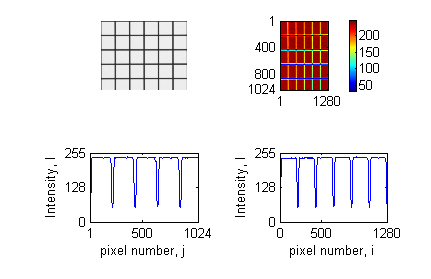

Lab: Brownian motion
The purpose of this lab is to learn some basic statistical physics, microscopy, imaging and image analysis. The data you take here are the data for Project 1. The theory is in the notes on active and passive motion, sections on random walks, diffusion, viscous drag and the Langevin equation.
Background
Nobel Prize in 2009
Electronic cameras surround us everywhere and have been used scientifically since they were invented. In 2009, Willard S. Boyle and George E. Smith at Bell Laboratories were awarded the Nobel Prize in Physics “for the invention of an imaging semiconductor circuit, the CCD sensor”.
The optical microscope
The microscope is a stable stand that allows small, controlled movements of what you are looking at relative to the light source and the objective. The illumination is at least as important for what you see as the type of objective you use. If the illumination is correct, the resolution of the microscope is set by the numerical aperture (NA) of the objective. The resolution is the radius of the diffraction pattern from point sources, and is at best \(r=\lambda/(2\,\mathrm{NA})\), where \(\lambda\) is the wavelength of the light. We have two objectives with NA = 0.4 and NA = 0.65, so the resolutions for green light are \(D_{20X}=0.7\) µm and \(D_{40X}=0.4\) µm.
Imaging with electronic cameras
The objective sends out an almost parallel beam of rays. This beam must pass through an eyepiece to form an image on the retina, or through an imaging lens to form an image on the sensor of a camera. In an electronic camera, electrons are released where light falls on a semiconductor chip. The chip is divided into many pixels, each of which works as a light sensor.
- The spatial resolution of a camera is set by how many pixels the chip is divided into.
- Just as important is the intensity resolution: how many intensity levels each pixel can distinguish. It depends on the pixel size (larger pixels collect more electrons), the sensor temperature (fewer thermal noise electrons when cold) and the readout noise (usually larger for faster readout). Most simple cameras and image formats use \(2^8=256\) levels (8 bit). Good SLR cameras have a raw format with 12 bit (\(2^{12}=4096\) levels). Good scientific cameras are cooled to between −80 and −180 °C and have expensive readout electronics giving \(2^{16}=65536\) levels. Then each pixel is an accurate, sensitive light meter.
- Square pixels are an advantage: the conversion from pixels to object size is then the same horizontally and vertically.
- If you do not need colour information, a greyscale camera is better, because colour filtering costs both spatial and intensity resolution.
- The last choice is the chip technology, CCD or CMOS.
Image analysis

I[:, 500] on the left and horizontal cross-section I[500, :] on the right.
We only use monochrome cameras here. A monochrome image is a 2D matrix with elements \(I_{ij}\), \(i=1\ldots N_y\), \(j=1\ldots N_x\). For an 8-bit image, \(I_{ij}\) is between 0 (black) and 255 (white). The pixel coordinates correspond to object coordinates \(x_j=j s_x\) and \(y_i=i s_y\), where \(s_x\) and \(s_y\) are the pixel sizes in the object (µm per pixel). One of the first things to do with a new imaging system is to find \(s_x\) and \(s_y\) by imaging an object of known size and counting how many pixels it covers.
Figure 1 shows a greyscale image with 1024 × 1280 pixels and intensities between 50 and 240. The positions of the horizontal lines are the 4 minima in the lower left plot, and the positions of the vertical lines are the 5 minima in the lower right plot. Since the lines are 50 µm apart, these minima give \(s_x\) and \(s_y\).
In Python:
import numpy as np
import matplotlib.pyplot as plt
from PIL import Image
I = np.array(Image.open('grid20x.png').convert('L')) # greyscale matrix
plt.imshow(I, cmap='gray'); plt.colorbar()
plt.figure(); plt.plot(I[:, 500]); plt.plot(I[500, :])Before the lab
- Install Python with
numpy,scipy,matplotlib,pandas,trackpyandpims(see Working with LLMs for how to get help with this). - Run
randomwalk_exercise.pya few times. Changetimesteps,numpartandstepsizeand see how the result changes. - Run
synthetic_brownian.py. It makes a movie of simulated beads with a known \(D\), tracks it with trackpy, and prints the true and the fitted \(D\). This is the reference you will test your own pipeline against.
In the lab
Imaging quality and calibration
Get help to place the test slide in the microscope, turn on the light, open the camera program, and set the camera to take pictures continuously and show them on the screen. Never touch the surface of the test slide!
- Use the 20X objective, find a field with a square grid, and focus while looking in the eyepiece.
- Open a window that shows the histogram and a window where you can set the exposure time. The histogram shows how many pixels have each intensity. You should see two peaks, one for the white stripes and one for the black stripes.
- Set a light intensity that is comfortable for the eyes. Then adjust the focus and the exposure time to get the largest possible distance between the two peaks in the histogram. You now have maximum contrast.
- Save a still image of the grid and determine \(s_x\) and \(s_y\) as in Figure 1.
- Repeat for the 40X objective.
- Is the resolution limited by diffraction or by the camera pixels? Calculate \(D_{20X}/s_x\) and \(D_{40X}/s_x\) and explain what these ratios tell you.
- Optional: Modulation transfer function (MTF). With the 20X objective, focus on the field with 60 LP/mm (line pairs per millimetre) and optimise contrast. Save an image, plot an intensity profile normal to the stripes, and note \(I_{\min}\) and \(I_{\max}\). Repeat with 380, 500 and 600 LP/mm, and then with the 40X objective. Plot \(\mathrm{MTF}(f)=(I_{\max}(f)-I_{\min}(f))/(I_{\max}(60)-I_{\min}(60))\) for both objectives.
Brownian motion
Get help from a supervisor to prepare a microscope slide with a small volume of liquid containing small particles. Use the 20X objective and normal illumination to find an area with particles. Switch to dark-field illumination if it is difficult to find the particles.
- Take one picture of the particles with normal illumination and one with dark-field illumination, with the best contrast you can get. Describe the difference between the two images and how each is produced.
- Determine the mean particle size in pixels and in micrometres. Compare with the nominal bead size and with the resolution of the objective.
- Record a 30 s movie at 15 frames per second with the best contrast and focus. Play it a few times (e.g. in ImageJ/Fiji) to see roughly how far the most mobile particles move during the movie.
- Before you leave: run
trackpy.locateon one frame andtrackpy.annotateto check that the particles are found (seetrackpy_anal.ipynb). It is much easier to fix exposure and focus now than to rescue bad data later. - Record a 5 min movie at 15 frames per second with the best possible contrast and focus.
- Write down: objective, pixel size, frame rate, exposure time, bead size (nominal), temperature in the room, and anything that may cause drift (evaporation, a tilted stage, a warm lamp).
After the lab
The analysis is Project 1. A short image sequence from an earlier lab, cropped to 1024 × 1024 pixels, is in src/stack2_crop/ if you want to start testing before you have your own data.